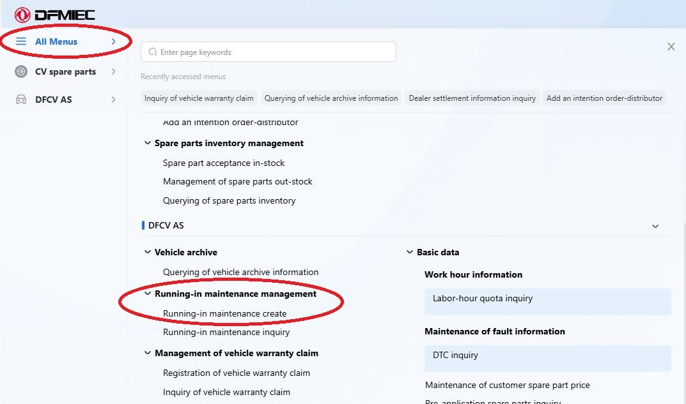
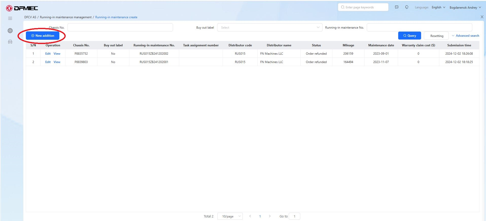
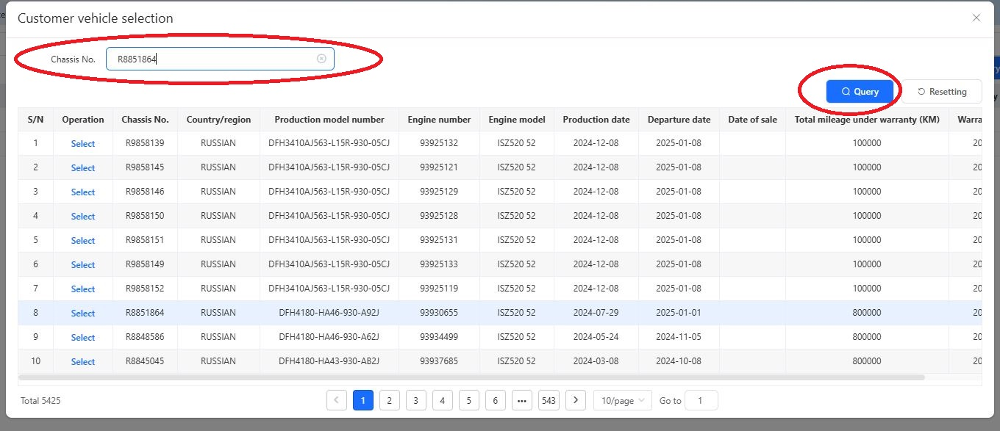
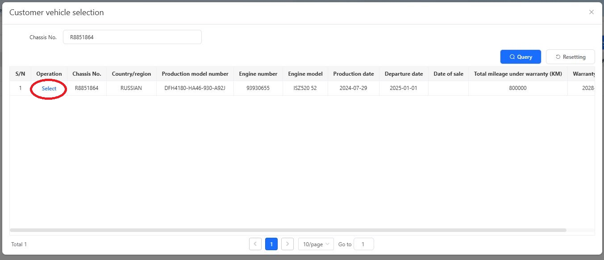
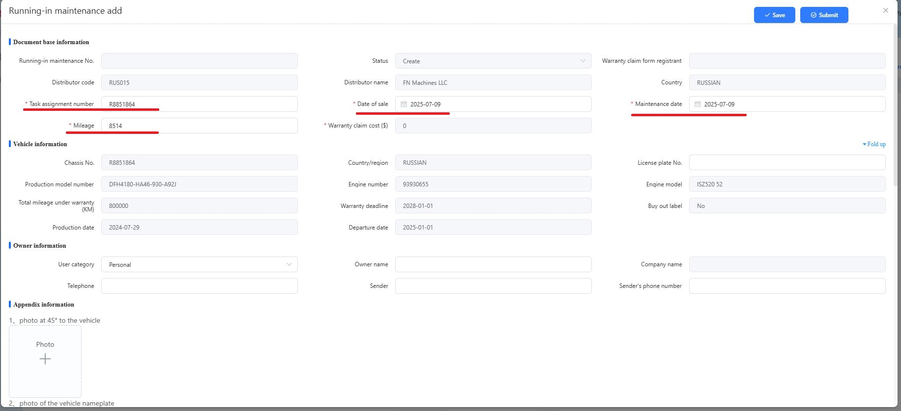
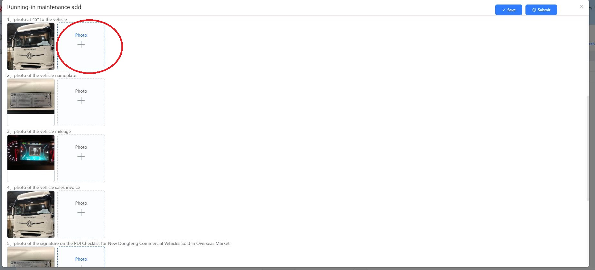
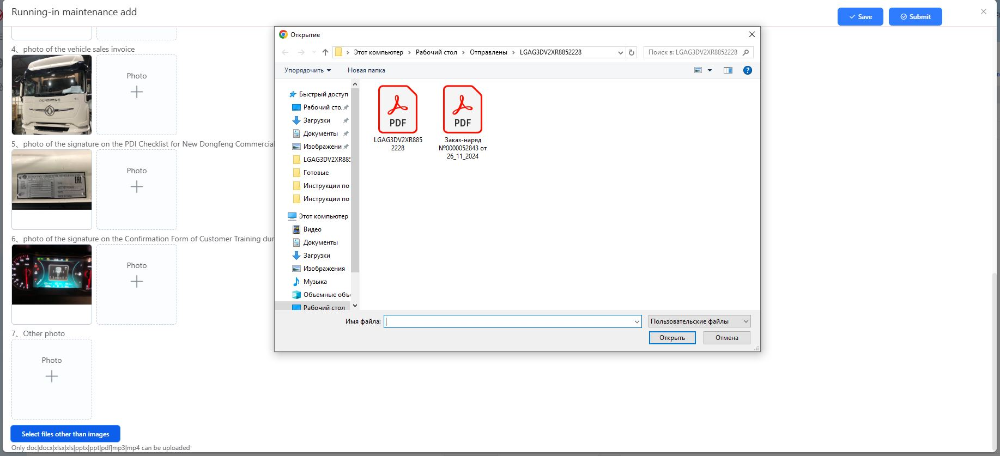

Чтобы поставить на гарантию новый грузовик нам потребуется:
Фото
общего вида автомобиля спереди под углом 45°
Фото таблички VIN
Фото пробега на момент продажи
Акт приема передачи автомобиля
подписанный с клиентом
УПД или Счет-фактура от этой сделки
Необходимость в данной информации, следует донести до коллег из отдела продаж автомобилей, подготовка фото и документов, в их зоне ответственности.
Вход в портал DMS осуществляется по ссылке - https://dms.dongfeng-global.com Язык на выбор, китайский, английский, русский, французский, и испанский. Рекомендуем использовать английский язык, в нем более адекватный перевод.

После входа, открываем общее меню по кнопке All Menus, в левой
верхней части экрана.
Далее After-Sales Service, и находим пункт
Running-in maintenance management - Running-in maintenance create.
Этот пункт - это создание заявки на ввод машины в эксплуатацию
(постановка на гарантию).

В открывшемся окне, мы видим созданные нами заявки постановки на
гарантию находящиеся в работе. После одобрения заявки, они пропадают из
этого меню.
Для создания новой заявки необходимо нажать кнопку New
additional в верхнем левом углу.

В открывшемся окне представлен список всех известных автомобилей,
которые еще не поставлены на гарантию. То есть эти машины официально
прошли границу РФ, возможно еще не проданы, или просто забыли их ввести
в эксплуатацию.
Сначала нужно найти наше авто в этом списке, для
этого необходимо ввести шасси автомобиля в строку отбора и нажать кнопку
Query.

Программа выполнит отбор, и мы увидим одну строчку с нужным нам авто.
Для продолжения оформления подтверждаем выбор нажатием на синюю
надпись Select.

Если автомобиль не нашелся после отбора – смотри документ «Машина не отображается в
системе»!
После выбора авто, мы попадаем непосредственно
в заявку на постановку на гарантию. Все данные по автомобилю уже внесены
автоматически. Необходимо заполнить пункты, отмеченные звездочкой, за
исключением Warranty claim cost ($).
Task assignment number –
это уникальный номер заявки, например номер заказ наряда на проведение
PDI. Мы используем номер шасси.
Date of sale – дата продажи,
ее берем строго из документа Акт приема передачи техники, или дату
создания УПД. Не важно когда клиент фактически забрал машину, гарантия
начинается с даты подписания документов.
Maintenance date –
дата проведения PDI, на данный момент рекомендуем указывать ту же дату
что и дата продажи.
Mileage – пробег авто, берем с фото
приборной панели, которое потом нам необходимо будет приложить.

Ниже необходимо добавить ряд фото по этому автомобилю. Фото добавляются по нажатию на прямоугольник с плюсом (+). Каждое фото должно соответствовать запрашиваемому. На сегодняшний день необходимо 3 фото – общий вид авто под углом 45° спереди, табличка VIN в проеме правой двери, фото приборной панели с пробегом. Но без прикрепления шести фото заявку невозможно сохранить, поэтому добавляем те же фото.

Осталось прикрепить к заявке два документа, Акт приема передачи техники, и УПД (либо Счет-фактуру при использовании). Они прикрепляются по кнопке Select files other than image в самом низу окна.

Для завершения создания заявки, необходимо сохранить документ по кнопке Save, и отправить на рассмотрение кнопкой Submit.